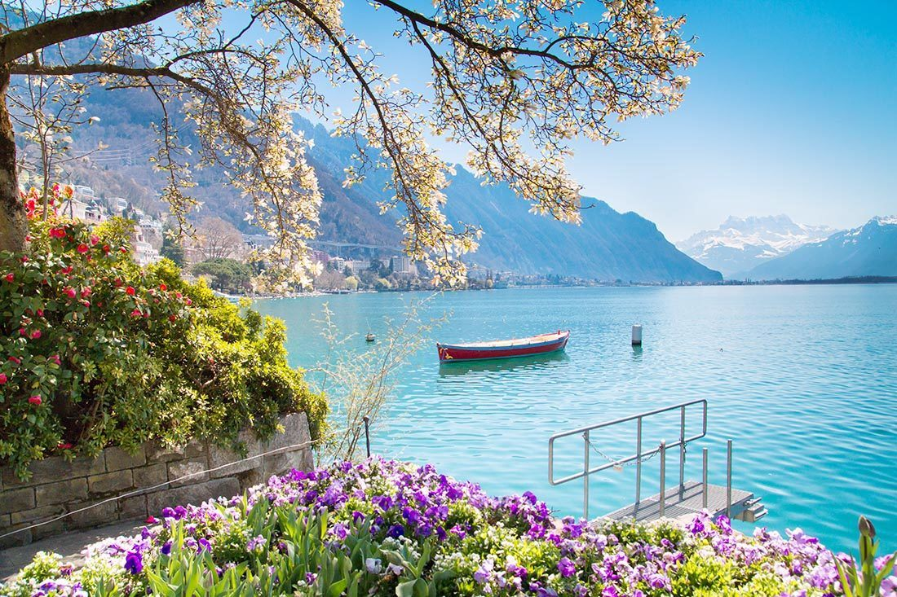

Switzerland is a small mountainous country located in central Europe. This landlocked country is about the size of New Jersey and is between France and Italy. Switzerland’s capital is Bern. Switzerland is famous for its mountains, clocks and its food– especially cheese and chocolates. The amazing natural beauty of the majestic Alps, the placid lakes, quaint villages, cosmopolitan cities and towering castles - that’s just some of what Switzerland has to offer. To get the true flavor of this beautiful country. The most famous places in Switzerland are Geneva, Zurich, Lucerne, Jungfraujoch, and Mt. Titlis.
From its stunning Alpine mountains to its crystal-clear lakes and rivers, Switzerland boasts some of the most beautiful and unspoiled scenery in the world. Therefore, it’s only natural that Swiss people like to keep it clean and litter-free. The Swiss people also encourage their kids to either walk or bike to school to keep the air cleaner. Their environmental friendliness comes from their love of nature. They do so many outdoor activities such as hiking, skiing, and mountain biking.
